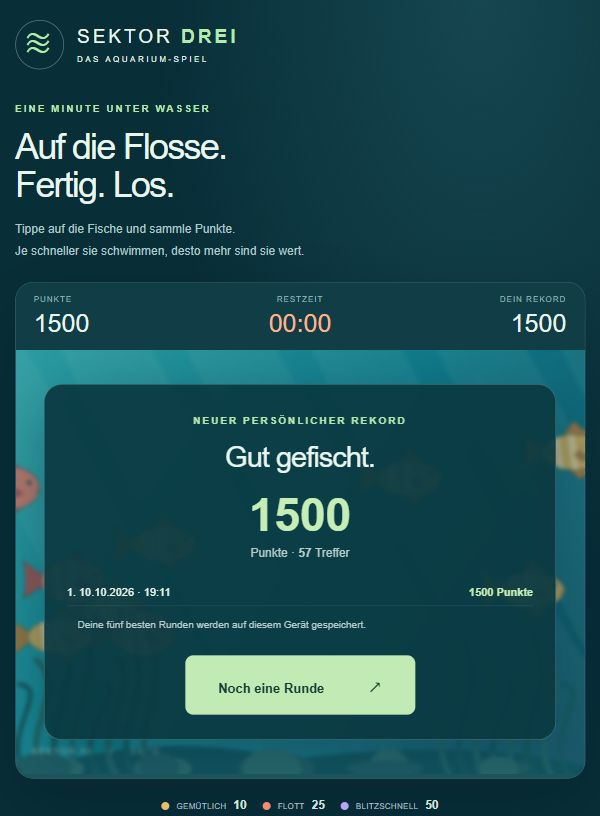
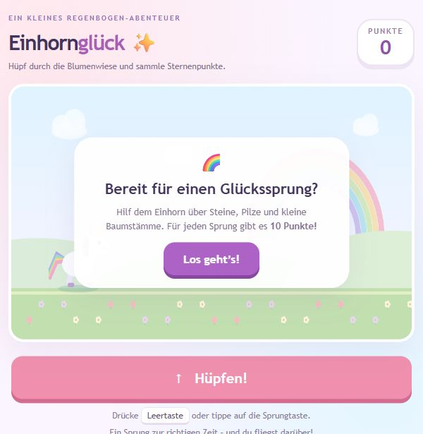

Eine kleine
Spielpause.
Tauch ab oder spring ins nächste Abenteuer.
Wähle dein Spiel und leg direkt los.

60 SEKUNDEN UNTER WASSER
Fish Game
Tippe auf die Fische und sammle Punkte. Wie viele schaffst du in einer Minute?
Jetzt spielen ↗
EIN SPRUNG VOLLER GLÜCK
Unicorn Game
Hüpfe über Hindernisse und sammle Punkte. Mit Leertaste oder Sprungtaste.
Jetzt spielen ↗